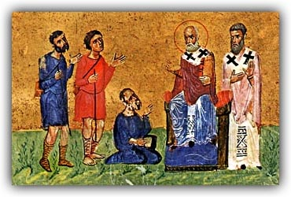
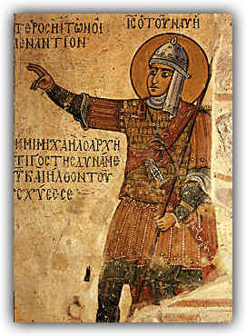

 |
Debate 3: Nobles vs. Peasants |  |
Proposition: a strong free peasantry is essential to the strength of the empire
Remember:
you will be called upon to answer at
least one of the items listed below as part of the debate; you may
(should)
also take part in the counterargument section if you have things to say
that
differ from what your teammates have said.
This could be argued in two ways. You can argue it from the point
of view of people at the time, or you can argue it from historical
hindsight. If you do the former, you should base it on the
primary sources documents provided below. If you do the latter,
you will have to work out an argument for why the proposition worked or
didn't work; and you should read up on the later history of the
Byzantine empire so that you can argue what the consequences of various
policies were.
Debate:
Team 1: argue for the Proposition
Team 2: argue against the Proposition
Assigned questions - Team 1:
1. Background - What is allelengyon? How did it work? How did it change over time?
2. Background - What is protimesis? Who proposed it, and what were the details?
3. Background - What was the background and career of Romanos Lecapenos? What were his contributions to the debate over land ownership?
4. Presentation of the proposition: what is the topic? what is the basis of your argument?
5. Arguments - select one significant argument, and explain what it means
6. Arguments - select one significant argument, and explain what it means
7. Arguments - select one significant argument, and explain what it means
8. Do the summary, summarizing your team's arguments and state why they are preferable (you can't do this ahead of time).
Assigned questions - Team 2:
1. Background - Who were the dynatoi exactly? Where did they come from? Where did they live? What was their basis of power?
2. Background - Was was the background and career of Nikephoras Phocas? What were his contributions to the debate over land ownership?
3. Background - What changes did Basil II make to both the legal subject of land ownership and to the composition of the Byzantine military?
4. Presentation of the proposition: what is the topic? what is the basis of your argument?
5. Arguments - select one significant argument, and explain what it means
6. Arguments - select one significant argument, and explain what it means
7. Arguments - select one significant argument, and explain what it means
8. Do the summary, summarizing your team's arguments and state why they are preferable (you can't do this ahead of time).
Primary source evidence
I have put some documents taken from Deno John Geanakoplos, Byzantium: Church, Society and Civilization Seen through Contemporary Eyes (University of Chicago Press, 1984), which are relevant to this question, on Oncourse under "Resources" as a PDF file entitled "Peasantlaws.pdf".
Links to information on this topic
The background information for this topic is covered on pp. 257 and 267-75 of your textbook; scattered here and there you can find brief discussions of the topics you will need to cover.
There is an excellent website devoted to Greek history, with information on the economy of various phases of Bzyantine history, at http://www.fhw.gr/chronos/09/en/o/867/main/o6.html
The page listed here is the page on the economy between 867 and 1081; be sure to follow all the links on the left-hand side for information about landowning and the rural economy.
There is a detailed account of Middle Byzantine military organization here; it contains some information that might be useful.
Finally, for a more detailed account of the tenth century, with more on the eastern military families, I have put a selection from Mark Whittow's The Making of Byzantium, 600-1025 on Oncourse under "Resources" as a PDF file entitled "whittow.pdf".